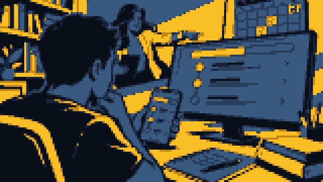
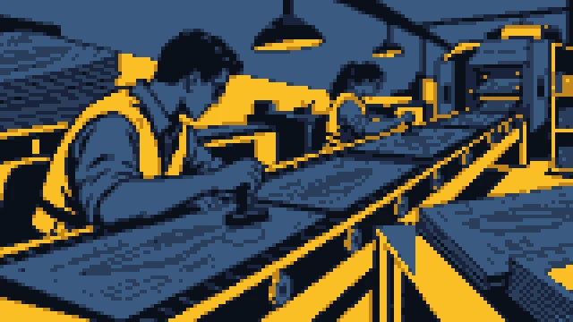
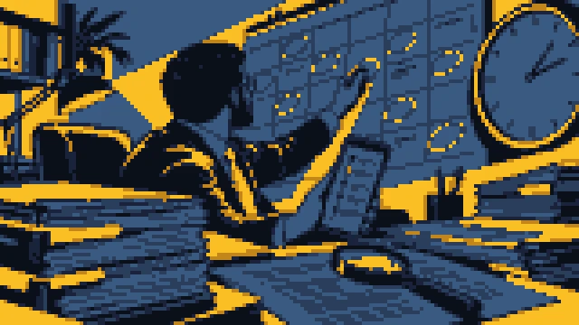
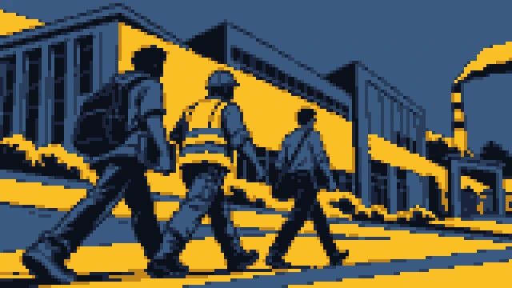
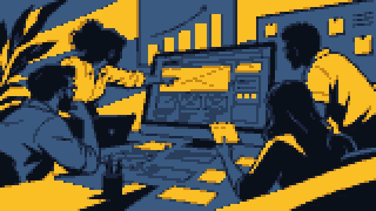
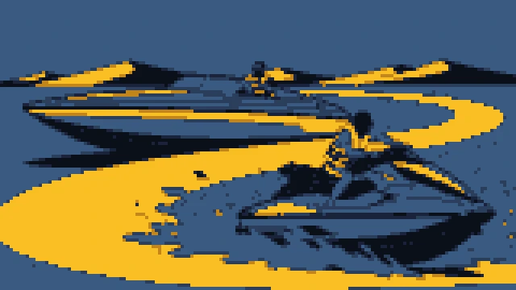
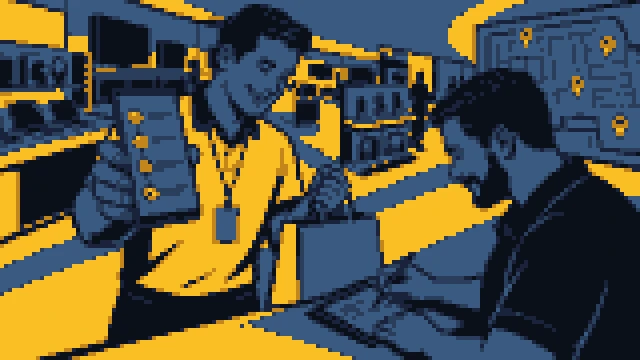

Archive
Nine more projects. Each one opens the full case on my current site.

2025–2026PP Concursos
Study platform discovery and design ↗

2026Design Ops Harness
The design pipeline of a software house ↗
2025Primo Investment Fund
Investment proposal approval platform ↗

2025Advoprazo
Legal deadline platform for solo lawyers ↗
2024Impactos Positivos
Voting platform for millions of votes ↗

2024FIEMA
Institutional portal for SENAI, SESI and IEL ↗

2023Platform Builders
Institutional website ↗

2023DiFérias
Two-sided nautical marketplace ↗

2022Carrefour SVA+ App
In-store sales app for electronics ↗